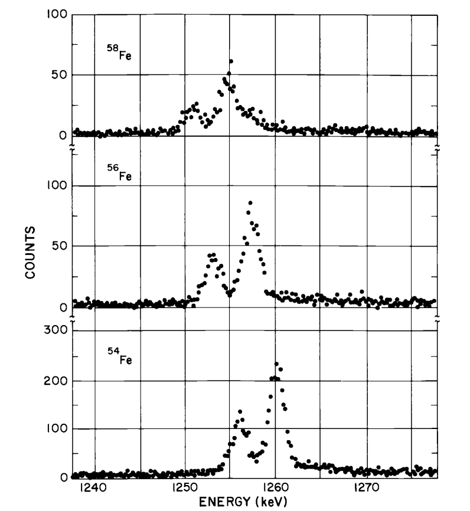
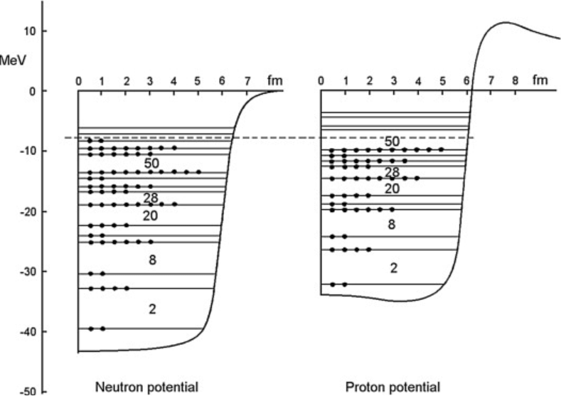
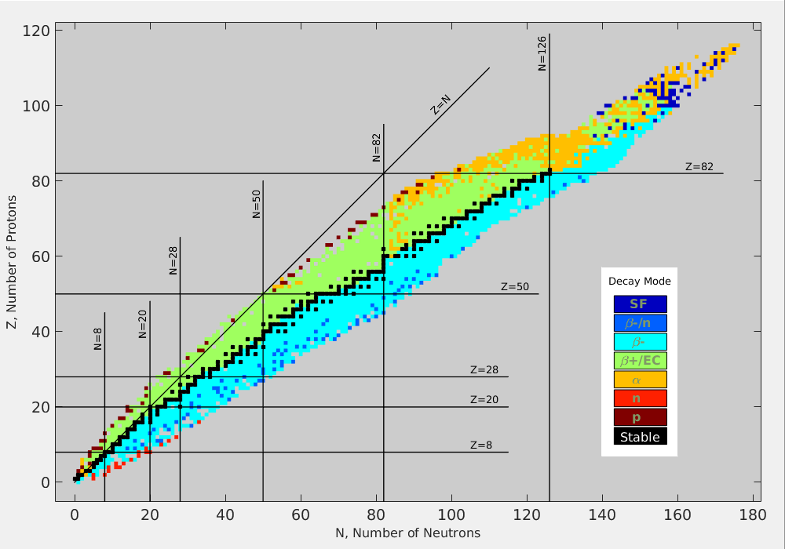
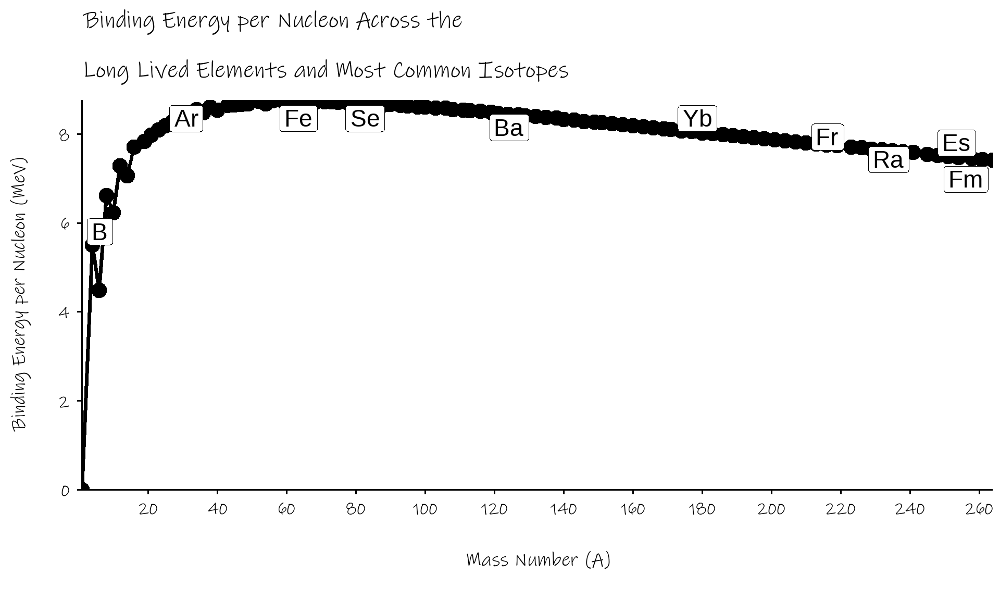

![]()
| Name | Symbol | Mass in amu | Rest Energy (MeV) | Spin |
|---|---|---|---|---|
| Proton | p | 1.007276 | 938.28 | 1⁄2 |
| Neuton | n | 1.008665 | 939.57 | 1⁄2 |
01 - Nuclear Forces
Summary
The nucleus is made of protons and neutrons. The stability of the nucleus relies on the short range nuclear force. The models produced can account for the nature and energy of radiation products, the results of scattering experiments, and the range of isotopes across the table of elements. We get a measure of stability, the binding energy per nucleon that peaks around iron.
The natural distance scale for the nucleus is the femtometre (1 fm =
Contents
- Nuclear Constituents
- Nuclear Sizes and Shapes
- The Nuclear Force
- Nuclear Masses and Binding Energies
Nuclear Constituents
Nuclei consist of protons and neutrons
- these have almost exactly the same mass
- neutrons a little heavier, but by less than 0.2%
masses of nuclei are very nearly integers (when measured in amu)
intrinsic spin (and thus magnetic moment) of nucleus consistent with both neutrons and protons have spin
12
Notation
Syntax
Atomic Number ( Z ) is the number of protons in the nucleus.
Atomic Mass ( A ) is the combined number of protons and neutrons in the nucleus.
Also, ( N ) is the number of neutrons, but we use that less often
how many protons, neutrons in
22688Ra ? How about56Fe ?Isotopes are nuclei with the same number of protons but different numbers of neutrons
- e.g.
20882Pb ,20782Pb ,20682Pb ,20482Pb
- e.g.
A solitary neutron isn’t stable, decays with half-life of 878s (15 minutes)
- turns in to a proton and electron (and anti-neutrino)
Neutrons and protons aren’t point particles (unlike the electron). Have radii of about 0.8fm.
made of quarks
up+23up+23down−13 =proton+1 up+23down−13down−13 =neutron0
Measuring mass in mega-electron volts (MeV)
- electron volts measure energy
- literally energy an electron gets when it crosses a 1 volt battery
- charge on electron is
1.6×10−19C , so energy is1eV=1.6×10−19Joules
- from relativity,
mass↔energy - using
E=m×c2 thusmass=energy/c2 and we get: 1eV=1.6×10−19/c2=1.6×10−19/(3×108)2=1.78×10−36kg 1MeV=106eV=1.78×10−30kg
Makes for a handy unit to measure nuclear energies and masses.
Nuclear Size
femtometer is natural unit for nucleus
1fm=10−15m
nuclear radii range from 1fm to about 7fm
- very small compared to size of atom
measure using:
- electron diffraction
- isotope wavelength shifts
- Coulomb energies of mirror nuclei
- scattering of
α particles α decay lifetimes
Electron Diffraction
electrons have wavelengths given by:
diffraction minima at
420MeV (
gives nuclear radius of 2.33fm
Isotope Wavelength Shifts

From Krane - Introductory Nuclear Physics
The larger the nucleus, the less chance the electron (or in diagram above, muon) has to be in close proximity to a high concentration of charge
Mirror Nuclei
mirror nuclei have opposite numbers of protons and neutrons
- example
31H and32He or73Li and74Be
- example
as far as the nuclear force is concerned, there is no difference between protons and neutrons
but the extra positive charge in
32He carries a Coulomb penalty, which will depend on the average separation of the protonscan measure this energy difference by the maximum energy of positron from
β decay
α Decay
looking within a nucleus, we see temporary assemblages of
α particles.these aren’t static, and collide up against the inner wall of the nucleus frequently
classically they don’t have enough energy to escape, but can get out through quantum mechanical tunnelling
super sensitive to size of barrier, and the energy of this quasi-
alpha particle- explains the extreme range of
α half lives - get correlation between half life and ejected
α energy
- explains the extreme range of
So, what is the size of a nucleus?
nuclear densities pretty much all the same
Radius=1.2×A−−√3 in fm
surface a little proton rich
but charge and matter radii of nuclei agree to within 0.1fm
shape pretty spherical, a little oblate. Sometimes.
Structure of Nucleus
must be something holding nucleus together, stopping positive protons flying apart
also need to explain radiation
energies of
α,β,γ nuclear half lives
scattering experiments (fire particles at nucleus and see how they bounce off)
which nuclei are stable
behind all this is the Nuclear Force, the left over remnants of the Strong Force
Nuclear Force
Something has to hold the nucleus together. Some properties of this nuclear force
- must be big, has to overcome Coulomb repulsion between protons
in fact, quantum mechanics says it must be even bigger
particle in a box of size of a = 6fm (something like aluminium)
Nuclear Force
only relevant at fm distances, feeble at greater separations (>3fm)
- see this from proton scattering
only effects protons and neutrons, not electrons
- it’s like electrons are nuclear force neutral
agnostic to difference between protons and neutrons
repulsive at short (< 0.5fm) distances
depends on spins of nucleons
Nuclear Force
no analytic form of nuclear force
- nothing like Coulomb’s Law or Einstein’s gravity
but it does have an exponential term
Fnuclear∝e−rR0
best modelled as an exchange force, mediated by some particle
first analysed by Yukawa
Yukawa Exchange Force
fire a proton at a neutron
it will scatter off in different directions
have to obey conservation of energy and momentum
most will go straight through pretty much
- a neutron is a small target
intensity decreases with angle
but too many are scattered at up to
180∘ explained by the proton becoming the neutron and vice-versa
has to be some particle being passed from neutron
⇌ protononly possible if we borrow energy using the uncertainty principle
ΔEΔt≥ℏ2 Δt given by time taken to cross nucleus at speed of lightΔt≤Rc=3×10−153×108=10−23s this gives
ΔE≈ℏc2×R gives a particle of about 100MeV (c.f. proton 938MeV, electron 0.511MeV)
eventually discovered the Pion (
π∘andπ± ), which is made up a quark and anti–quark and has a mass of about 140MeV.
Investigating Nuclear Force - Deuteron
can get a bound state of a single proton and a single neutron, called deuteron (c.f. deuterium,
2H )something like the equivalent of a hydrogen atom for atomic structure
- the simplest possible system
don’t get proton-proton or neutron-neutron
deuteron has the protons and neutron spins parallel (
l=1 , triplet)no excited states of deuteron (unfortunately)
Investigating Nuclear Force - Deuteron
depth of potential well is about 35MeV (remember,
E=3ℏ2π22mpa2 , for deuteron we measure radius, = a/2, to be 2.1fm)but separation energy (like ionisation energy) is 2.224MeV
- get this from binding energies and also from formation and disassociation energies (e.g.
1H+n→2H+γ )
- get this from binding energies and also from formation and disassociation energies (e.g.
so deuteron only just exists, luckily for us
Nuclear Shell Model
Next level of complexity moves beyond simple potential well
protons and neutrons moving in orbits within nucleus
energy levels akin to atomic electron energy levels
nuclei with evens numbers of protons and even numbers of neutrons most stable
- protons and neutrons fill up energy levels independently
- of the 288 nuclei found in nature, 169 are even-even, only 8 are odd-odd
2D ,8Li ,10B ,14N ,40K ,50V ,138La ,176Lu
- protons and neutrons fill up energy levels independently
Nuclear Shell - Quantum States
would like to be able to solve the Schrödinger equation for the nuclear potential, just like we can to solve the electronic levels of Hydrogen
not possible because don’t have a clean equation for the nuclear force/potential
but can use some approximations to get useful results
end up with a ladder of quantum levels (c.f. 1s, 2s, 2p… atomic orbitals)
transitions between levels lead to the emission of light -
γ raysseparate suites of levels for protons and for neutrons

Mateusz Sitarz - 2019 thesis - nuclear energy levels for
electrostatic repulsion between protons isn’t nothing
- they’re only ~ 1fm apart
- preference for neutrons (no repulsion)
- light nuclei have Z ~ N (equal numbers)
- heavier nuclei have more neutrons than protons
set of magic numbers (a.k.a. noble elements)
- 2, 8, 20, 28, 50, 82, 126
- lots of isotopes for these elements

Nuclear Valley of Stability (from wikipedia)
Nuclear Binding Energy
- nucleus is a little lighter than the sum of its parts
Binding Energy per Nucleon of
- mass of proton = 938.272 MeV
- mass of neutron = 939.565 MeV
- mass of
238U = 221 743 MeV
- measure of how stable a nucleus is
- want this as big as possible
- can repeat this calculation for all nuclei

B/A rises rapidly through the lightest elements
hits a maximum of ~8.75 MeV around
56Fe - (well, actually
62Ni )
- (well, actually
decreases gradually beyond that
if we can turn elements into
56Fe , from either direction, we can release energy- fission splits up heavier elements, moves up curve from the right
- fusion coalesces lighter elements, moves up curve from the left
Semiempirical Mass Formula
made of five terms
an positive volume term proportional to A given by
aνA a negative surface term given by
−asA−23 - remember
Radius∝A−13
- remember
a negative Coulomb term depending on the number and separation of the protons. Given by
−acZ(Z−1)A−13 (again, remember the radius)a negative symmetric term favouring equal numbers of protons and neutrons, especially for light nuclei. Given by
−asym(A−2Z)2A a positive pairing term favourising even numbers of protons / neutrons. Let’s call this term just
δ
Binding Energy Equation
a good fit for:
aν=15.5MeV as=16.8MeV ac=0.72MeV asym=23MeV ap=34MeV
Equations
1MeV=1.6×10−13J=1.78×10−30kg Radius=1.2×A−−√3 in femto-metres (1 fm =10−15m )BindingE.pernucleon=938.272×Z+939.565×(A−Z)−(massinMeV)A B=aνA−asA−23−acZ(Z−1)A−13−asym(A−2Z)2A+δ
References
Nuclear Physics
01 - Nuclear Forces Nuclear Physics PHYS2829 eugene.hickey@tudublin.ie Technological University Dublin